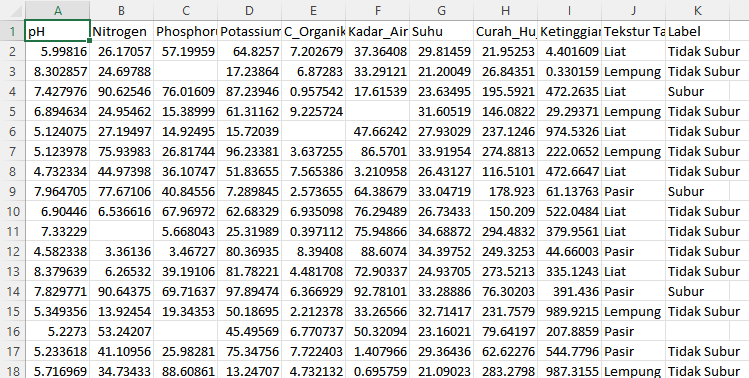

UTS-PENDATA#
Analisa Data Kesuburan Tanah#
code yang berfungsi untuk membuat, membersihkan, dan mengevaluasi model Machine Learning K-Nearest Neighbors (KNN) untuk klasifikasi ‘Kesuburan Tanah’.
1. Pembuatan Dataset (2000 Data)#
Dataset sintetis dibuat dengan 2000 baris data yang mencakup berbagai parameter tanah. Label ‘Subur’ atau ‘Tidak Subur’ ditentukan berdasarkan kondisi pH, Nitrogen, dan Fosfor tertentu.
np.random.seed(42)
n = 2000
data = {
'pH': np.random.uniform(4.5, 8.5, n),
'Nitrogen': np.random.uniform(0, 100, n),
'Phosphorus': np.random.uniform(0, 100, n),
'Potassium': np.random.uniform(0, 100, n),
'C_Organik': np.random.uniform(0, 10, n),
'Kadar_Air': np.random.uniform(0, 100, n),
'Suhu': np.random.uniform(20, 35, n),
'Curah_Hujan': np.random.uniform(0, 300, n),
'Ketinggian': np.random.uniform(0, 1000, n),
'Tekstur Tanah': np.random.choice(['Liat', 'Pasir', 'Lempung'], n)
}
df = pd.DataFrame(data)
df['Label'] = np.where(
(df['pH'] > 5.5) &
(df['Nitrogen'] > 40) &
(df['Phosphorus'] > 40),
'Subur',
'Tidak Subur'
)
2. Penambahan Missing Value#
Untuk mensimulasikan data, sekitar 5% data di dataset diubah menjadi np.nan (Not a Number) secara acak.
for col in df.columns:
df.loc[df.sample(frac=0.05).index, col] = np.nan
3. Penyimpanan Data Mentah#
Dataset dengan missing value ini disimpan sebagai dataset_tanah_raw.csv.
df.to_csv("dataset_tanah_raw.csv", index=False)
4. Preprocessing Data#
Langkah-langkah pembersihan dan persiapan data meliputi:
Penanganan Missing Value: Missing value pada kolom numerik diisi dengan nilai median. Untuk kolom kategorikal ‘Tekstur Tanah’ dan ‘Label’, missing value diisi dengan mode (nilai yang paling sering muncul).
Encoding Kategorikal: Kolom ‘Tekstur Tanah’ diubah dari teks menjadi angka menggunakan
LabelEncoderagar dapat diproses oleh model.
# Handle Missing Values
df.fillna(df.median(numeric_only=True), inplace=True)
df['Tekstur Tanah'].fillna(df['Tekstur Tanah'].mode()[0], inplace=True)
df['Label'].fillna(df['Label'].mode()[0], inplace=True)
# Encoding
le = LabelEncoder()
df['Tekstur Tanah'] = le.fit_transform(df['Tekstur Tanah'])
5. Penyimpanan Data Bersih#
Dataset yang sudah bersih dan terproses disimpan sebagai dataset_tanah_clean.csv.
df.to_csv("dataset_tanah_clean.csv", index=False)
6. Pembagian dan Skala Data#
Dataset dibagi menjadi fitur (X) dan target (y). Fitur X kemudian dinormalisasi menggunakan StandardScaler. Setelah itu, data dibagi menjadi set pelatihan (80%) dan pengujian (20%).
X = df.drop('Label', axis=1)
y = df['Label']
scaler = StandardScaler()
X = scaler.fit_transform(X)
X_train, X_test, y_train, y_test = train_test_split(
X, y, test_size=0.2, random_state=42
)
7. Pelatihan Model KNN#
Model K-Nearest Neighbors (KNN) dengan n_neighbors=5 dilatih menggunakan data pelatihan.
knn = KNeighborsClassifier(n_neighbors=5)
knn.fit(X_train, y_train)
y_pred = knn.predict(X_test)
8. Evaluasi Model#
Model dievaluasi menggunakan metrik Akurasi, Presisi, Recall, dan F1-Score pada data pengujian. Hasil evaluasi memberikan gambaran kinerja model.
accuracy = accuracy_score(y_test, y_pred)
precision = precision_score(y_test, y_pred, pos_label='Subur')
recall = recall_score(y_test, y_pred, pos_label='Subur')
f1 = f1_score(y_test, y_pred, pos_label='Subur')
print("=== HASIL EVALUASI MODEL KNN ===")
print("Accuracy :", round(accuracy, 4))
print("Precision:", round(precision, 4))
print("Recall :", round(recall, 4))
print("F1-Score :", round(f1, 4))
Hasil Evaluasi Model KNN:#
=== HASIL EVALUASI MODEL KNN ===
Accuracy : 0.845
Precision: 0.6944
Recall : 0.7212
F1-Score : 0.7075
Hasil Akhir#

9. Pengunduhan File#
Pada akhirnya, file dataset_tanah_raw.csv dan dataset_tanah_clean.csv diunduh ke sistem lokal Anda.
from google.colab import files
files.download("dataset_tanah_raw.csv")
files.download("dataset_tanah_clean.csv")